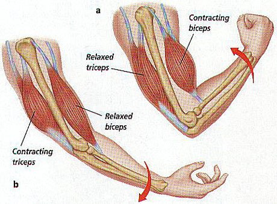

The Overlooked Muscle
Biceps versus Triceps
10/8/2025 Adedipo Soyele
Why train arms
- Have you ever felt weak?
- Do you find yourself needing a confidence boost?
- Do you simply need a trait to recieve compliments on?
Training Arms makes you stronger, feel more confident in yourself, and most importantly gets you the positive recogniztion that you desire.
What Defines Arm Muscularity?
When you flex your arms you typically focus on flexing your Biceps, as a result you conclude that the size of your bicep determines the amount of muscle your upper arms contain. The reality is that large arms don’t fully rely on Biceps, there is another muscle group known as the Triceps which is an overlooked muscle group that has a big influence on muscle size and appearance.
The difference between Triceps and Biceps
The Biceps are located at the front of the upper arm, the Biceps also known as the bicep brachii has two heads, short and long heads. The brachii is responsible for elbow flexion and forearm supination.
The Triceps are found on the back of the upper arm, the Triceps also known as the Triceps brachii and have three heads long, lateral, and medial. The Triceps are responsible for elbow extension, shoulder stabilization, and shoulder extension.
Building Muscle
Regardless of the significance, both Biceps and Triceps have no effect on muscle size if you do not train them. As a result here is a table of exercises that allows you to train such muscle groups while giving you instructions and equipment needed to perform the exercise.
| Muscle Group | Equipment | Exercise | Procedure |
|---|---|---|---|
| Bicep | Dumbell | Dumbell Curl |
|
| Bicep | Dumbell | Hammer Curl |
|
| Bicep | Dumbell | Preacher Curl |
|
| Tricep | Bench | Bench Dips |
|
| Tricep | None | Diamond Push ups |
|
| Tricep | Dumbell | Tricep Extensions |
|
Conclusion
The Biceps make up one-third of the upper arm while the Triceps make up the other two-thirds. If you prioritize looks then your training should focus more on Triceps, but if looks aren’t of importance to you then you can train both Biceps and Triceps without a heavy focus on one group.